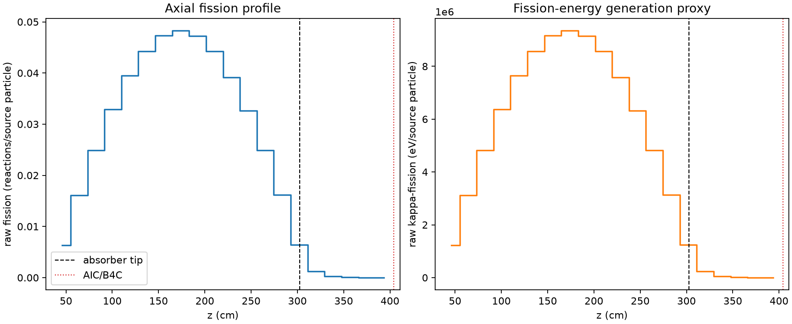
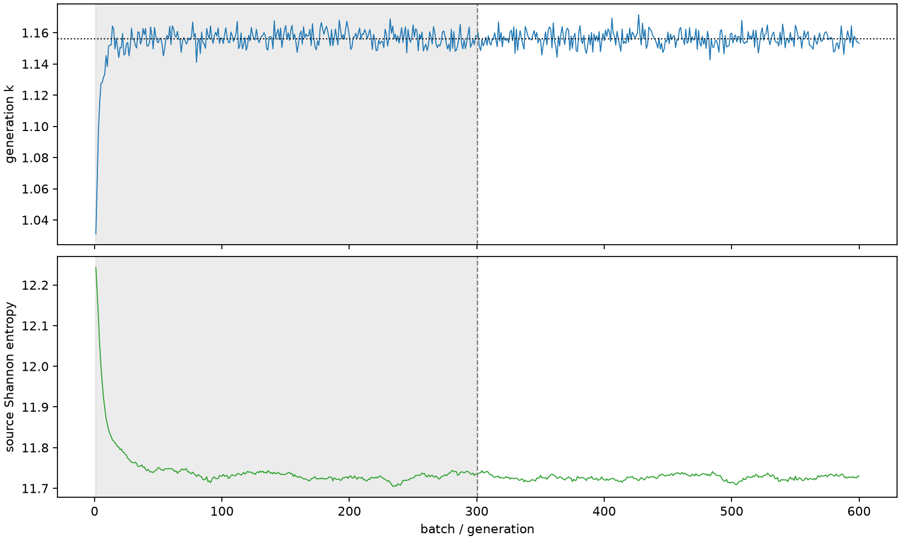

| field | value |
|---|---|
| experiment | V2-ADVISOR_PILOT8-0008 |
| k | 1.156185771102034 |
| MC standard error | 0.00017959357148858126 |
| seconds | 1202.2502018919913 |
| acceptance | not_assessed |
| convergence | review_required |
Completed is output integrity only; physical and statistical review required. Zero tallies do not prove zero production or zero uncertainty.
| diagnostic | value |
|---|---|
| geometric fuel voxels | 5280 |
| zero fission tally voxels | 0 |
| low signal fuel voxels | 576 |
| low signal fission share | 6.890134015309894e-05 |
| low signal kappa share | 6.893253464026593e-05 |
| important fission share | 0.9500348551725019 |
| previous filter included | 4704 |
| duration estimate s | 1562.5173488400023 |
| actual minus estimate s | -360.26714694801103 |
| fission relative MC error | statistics |
|---|---|
| all_geometric_fuel | {"voxels": 5280, "positive_mean_voxels": 5280, "zero_mean_voxels": 0, "undefined_relative_error_voxels": 0, "median": 0.010129952861373616, "p95": 0.42219197993292584, "maximum": 0.9677244656340687} |
| low_signal | {"voxels": 576, "positive_mean_voxels": 576, "zero_mean_voxels": 0, "undefined_relative_error_voxels": 0, "median": 0.39930822843201685, "p95": 0.8057430533307306, "maximum": 0.9677244656340687} |
| important_95pct | {"voxels": 3276, "positive_mean_voxels": 3276, "zero_mean_voxels": 0, "undefined_relative_error_voxels": 0, "median": 0.008212981146818035, "p95": 0.012427905642718052, "maximum": 0.014728784100655869} |
| outside_previous_filter | {"voxels": 576, "positive_mean_voxels": 576, "zero_mean_voxels": 0, "undefined_relative_error_voxels": 0, "median": 0.39930822843201685, "p95": 0.8057430533307306, "maximum": 0.9677244656340687} |
| kappa_fission relative MC error | statistics |
|---|---|
| all_geometric_fuel | {"voxels": 5280, "positive_mean_voxels": 5280, "zero_mean_voxels": 0, "undefined_relative_error_voxels": 0, "median": 0.010118154631934093, "p95": 0.42144568170105823, "maximum": 0.9672916930070165} |
| low_signal | {"voxels": 576, "positive_mean_voxels": 576, "zero_mean_voxels": 0, "undefined_relative_error_voxels": 0, "median": 0.3984112486833459, "p95": 0.8039965128472174, "maximum": 0.9672916930070165} |
| important_95pct | {"voxels": 3276, "positive_mean_voxels": 3276, "zero_mean_voxels": 0, "undefined_relative_error_voxels": 0, "median": 0.008203714539369838, "p95": 0.012413026315461479, "maximum": 0.01471138773918315} |
| outside_previous_filter | {"voxels": 576, "positive_mean_voxels": 576, "zero_mean_voxels": 0, "undefined_relative_error_voxels": 0, "median": 0.3984112486833459, "p95": 0.8039965128472174, "maximum": 0.9672916930070165} |
| axial bin | fission share | kappa-fission share |
|---|---|---|
| 1 | 0.01350215641787496 | 0.013502760853116145 |
| 2 | 0.03404345130132801 | 0.03404350706538347 |
| 3 | 0.05273881082852307 | 0.05273858859217765 |
| 4 | 0.06967555342290392 | 0.06967546397379136 |
| 5 | 0.08369924513444915 | 0.08369887328580565 |
| 6 | 0.09372952251417616 | 0.09372922719583038 |
| 7 | 0.10027803139766484 | 0.10027759664894317 |
| 8 | 0.10225946123011327 | 0.102259185170439 |
| 9 | 0.10011213142883736 | 0.10011156121545392 |
| 10 | 0.09375397956804975 | 0.09375350151124454 |
| 11 | 0.08296666357392819 | 0.08296641880191351 |
| 12 | 0.06908846616481924 | 0.06908823736895875 |
| 13 | 0.052784551870312876 | 0.05278430797856386 |
| 14 | 0.03429376453869755 | 0.034293719284752625 |
| 15 | 0.013610863972869463 | 0.013612233335028999 |
| 16 | 0.0026575785169362836 | 0.002658692992648051 |
| 17 | 0.0006208745402640132 | 0.0006211412269115531 |
| 18 | 0.00014106897074273275 | 0.00014113669393595632 |
| 19 | 3.716107330732261e-05 | 3.7178876724189045e-05 |
| 20 | 6.663534201823961e-06 | 6.667928377254928e-06 |
Histories include the inactive-to-active transition at batch 300. kappa-fission approximates fission energy production, not total heat deposition.

